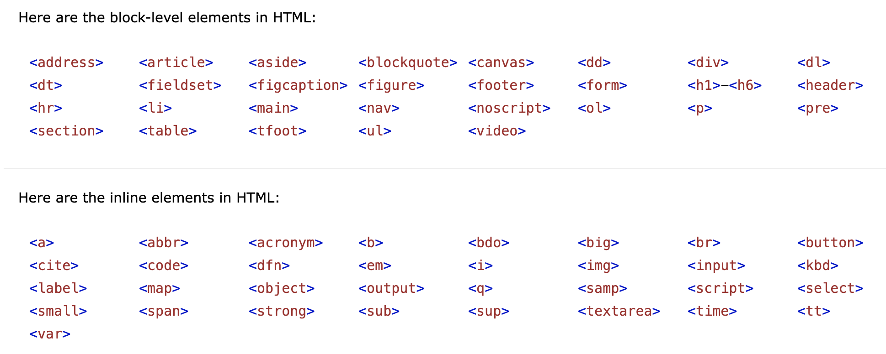
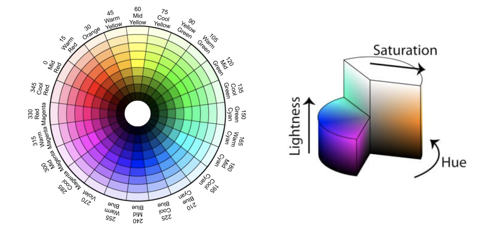
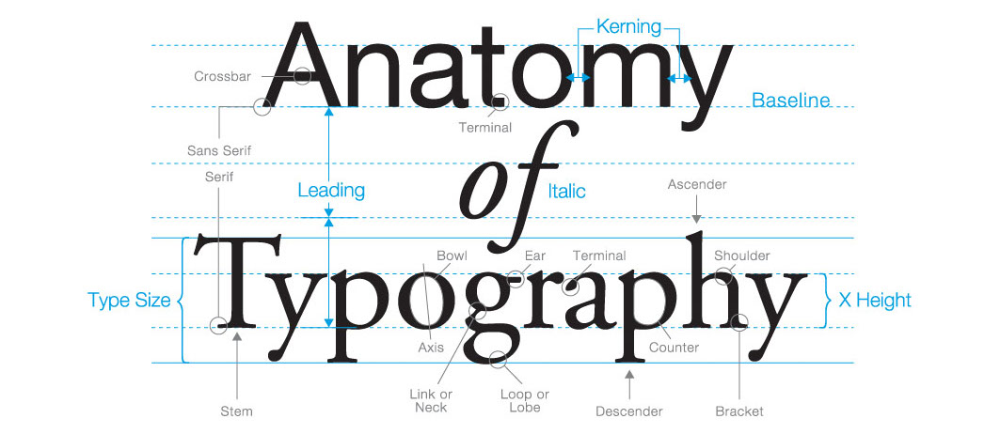
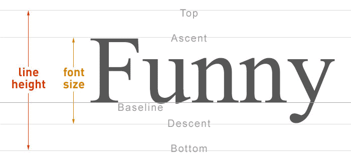
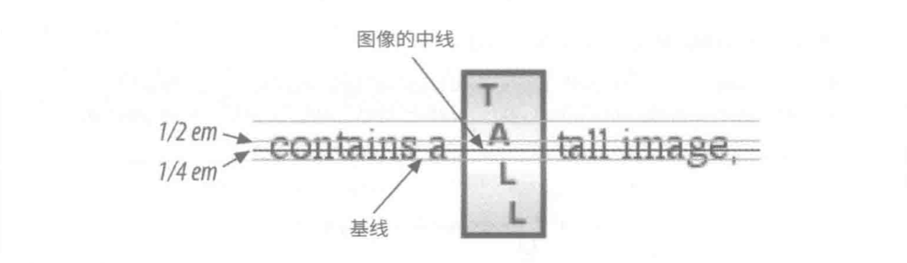

《CSS 权威指南（第四版）》读书笔记（第 1-6 章）
“旧书清理”系列。这里是 1-6 章的内容，主要介绍了：CSS 和文档、选择符、特指度和层叠、值和单位、字体、文本属性。
第 1 章 - CSS 和文档
- Page 10置换元素（Replaced Element）与非置换元素（Non-replaced Element）：前者指用来置换元素内容的部分不由文档内容直接表示，如
img；后者指元素的内容由用户代理在元素自身生成的框中显示，如span。 - Page 12在 HTML 中，块级元素不能出现在行内元素中，而通过 CSS 改变显示方式（display）则完全合法有效。但实际上 display 属性仅能改变元素的显示方式，而无法改变它们的种类。

- Page 16将 HTML 文档与 CSS 关联的几种方式：
<!-- 外部样式表 -->
<head><link rel="stylesheet" type="text/css" href="./styles.css" media="all"></head>
<!-- @import / 内联样式表 -->
<!-- * 在指定媒体类型时，style 标签与 @import 指令使用的类型在完全一致时，该样式才会生效 -->
<!-- * @import 必须放在样式表的最前面 -->
<style type="text/css" media="all">
@import url(./styles.css) all;
#root { display: block; }
</style>
<!-- 行内样式 -->
<div style="color: gray;">Hello, world!</div>
- Page 19候选样式表：用户可以自由选择想要使用的样式表。也可以为不同的候选样式表设定相同的 title 值，以将它们分组在一起，进而为不同的媒体（media）设置不同的样式。不带有 title 属性的样式表将始终用于显示所属类型的文档。
<head>
<link rel="stylesheet" type="text/css" href="./styles.css" title="Default"> <!-- 默认样式表 -->
<link rel="alternate stylesheet" type="text/css" href="./bigtext.css" title="Big Text">
<link rel="alternate stylesheet" type="text/css" href="./zany.css" title="Crazy Color">
</head>
- Page 22使用 HTTP 首部为文档关联 CSS（支持的浏览器并不多，如 Firefox）：
// Express v4.
app.use(express.static('.', {
setHeaders: (res, path, stat) => {
if (path.includes('index.html'))
res.set('Link', '<styles.css>;rel=stylesheet;media=all') // 入口文件默认使用 styles.css 样式表；
}
}))
- Page 25常见的厂商前缀：
- -epub-：国际数字出版论坛制定的 ePub 格式；
- -moz-：基于 Mozilla 的浏览器；
- -ms-：微软 IE；
- -o-：Opera 浏览器；
- -webkit-：基于 Webkit 的浏览器。
- Page 28媒体查询：
- 类型：
- all：用于所有展示媒体；
- print：为有视力的用户打印文档时使用，也在预览打印效果时使用；
- screen：在屏幕媒体上展示文档时使用。
- 媒体特性列表：特性描述符需放在圆括号中。
@media all and (color) and (orientation: landscape) and (min-device-width: 800px) {}
@media not (min-device-width: 600px) {}
@media screen and (max-color: 2), screen and (monochrome) {}
- 在不支持媒体查询的旧浏览器中隐藏样式表：使用确保向后兼容的 only 关键字。
@import url(new.css) only all;
- Page 32特性查询：根据用户代理是否支持特定的 CSS 属性及其值来应用一段样式，是支持网页渐进增强的完美方式。
/* 如支持指定的“属性+值”组合，则应用对应样式。可以与媒体查询互相嵌套 */
@supports (color: red) and (shape-outside: circle()) {}
@supports (shape-outside: circle()) or (-webkit-shape-outside: circle()) {}
@supports not (display: grid) {}
第 2 章 - 选择符
- Page 52在同一个 HTML 文档中，ID 选择符的值不能重复。
- Page 53属性选择符：
- 简单属性选择符:
h1[class] {}
[title] {}
a[href][title] {}
- 精准属性选择符:
h1[class="head"] {}
[title="main"] {}
a[href="http://www.w3.org/"][title="W3C Home"] {}
- 部分属性值选择符:
[foo|="bar"] {} /* 元素有 foo 属性，且其值以 "bar" 和 "-" 开头，或仅为 "bar" 本身 */
[foo~="bar"] {} /* 元素有 foo 属性，且其值是包含 "bar" 的一组词（词两侧必须为空格） */
[foo*="bar"] {} /* 元素有 foo 属性，且其值包含子串 "bar" */
[foo^="bar"] {} /* 元素有" foo 属性，且其值以 bar" 开头 */
[foo$="bar"] {} /* 元素有 foo 属性，且其值以 "bar" 结尾 */
*[class|="btn"][class*="-arrow"]:after {} /* 联合选择 */
/* CSS Selectors Level 4 新加入的不区分大小写选项 */
a[href$=".pdf" i] {}
- Page 63基于文档结构的选择符：
- 后代选择符:
/* 多个元素之间的层级间隔可以是无限的 */
h1 em {}
blockquote b, p b {}
- 子元素选择符：
h1 > strong {} /* 直接子代 */
- 紧邻同胞选择符：
h1 + p {} /* 紧跟在 h1 后面的 p */
- 后续同胞选择符：
h2 ~ol {} /* 选择与 h2 同属一个父元素的 ol */
- Page 72伪类选择符（使用 “:”）：可为文档中不一定真实存在的结构指定样式，或者为某些元素的特定状态指定“幽灵类”。伪类始终指代所依附的元素。
- 拼接伪类：
a:link:hover {}
a:visited:hover:lang(de) {}
- 结构伪类：
:root {} /* 选择根 HTML 文档 */
p:empty {} /* 选择没有任何子代（包括文本和空白）的 p 元素；自闭和的元素也会被选择 */
div:only-child {} /* 选择是唯一子元素的 div */
div:only-of-type {} /* 选择同胞中唯一的 div 类型的元素 */
li:first-child {}
li:last-child {}
/* 选择同胞中的第一个和最后一个某种元素 */
table:first-of-type {}
table:last-of-type {}
p:nth-child(3n + 1) {} /* 选择第 3、6、9 位置上的元素（n 从 1 开始）*/
p:nth-child(even)
p:nth-child(odd)
p:nth-last-child(2n - 1) {}
p:nth-of-type(n) {}
p:nth-last-of-type(n) {}
- 动态伪类：
- 受限于隐私保护，已访问链接的可用 CSS 样式仅限于颜色相关的属性。并且对已访问链接通过 DOM 接口查询，只能得到同“未访问”链接一样的样式信息。
a:link {} /* 指代用作超链接的锚记，且尚未访问的地址 */
a:visited {} /* 指代指向已访问地址的超链接 */
- 用户操作伪类：
a:focus {} /* 当指定元素获得输入焦点时 */
a:hover {} /* 当鼠标放置于指定元素上时 */
a:active {} /* 当用户激活指定元素时 */
- UI 状态伪类：
input:enabled {}
input:disabled {}
input[type="checkbox"]:checked {}
:indeterminate {}
:default {} /* 指代默认选中的单选按钮、复选框或选项 */
input[type="email"]:valid {}
input[type="email"]:invalid {}
input[type="number"]:in-range {} /* 仅适用于设置了范围的元素 */
input[type="number"]:out-of-range {}
input:required {}
input:optional {} /* 匹配非必填的元素 */
:read-write {} /* 匹配可由用户编辑的元素 */
:read-only {}
- 其他伪类：
/* 当用户访问 URL 中带有 “#target” 时，页面中以 “target” 为 ID 的元素将应用该样式 */
p:target { color: red; } /* 目标伪类 */
*:lang(fr) {} /* 语言选择伪类 */
/* 否定伪类，括号中只能使用简单选择符，即：类型选择符、通用选择符、属性选择符、类选择符、ID 选择符、伪类。且其自身不能嵌套 */
input:not([type="number"]) {}
- Page 100伪元素选择符（使用 “::”）：在文档中插入虚构的元素，且伪元素只能出现在选择符最后。
- 装饰首字母：
/* 装饰非行内元素的首字符或首行，可用 CSS 属性有限 */
::first-letter {}
::first-line {}
/* 在指定元素的内容前后插入新内容 */
::before {}
::after {}
第 3 章 - 特指度和层叠
- Page 105特指度（Specificity）：用户代理会确定哪些规则与元素匹配，找出所有相关声明，计算各自的特指度，判断哪些规则胜出，再把胜出的规则应用到元素上。
- 行内样式 -> (1, 0, 0, 0)；
- ID 选择 -> (0, 1, 0, 0)；
- 类选择、属性选择、伪类 -> (0, 0, 1, 0)；
- 元素选择、伪元素 -> (0, 0, 0, 1)；
- 连接符、通用选择符不增加特指度。
- Page 110重要声明（*!important*）不使用特指度解决冲突，它总是胜出的：
h1 { color: red !important; }
- Page 111继承：某些样式不仅应用到所指元素，还应用到元素的后代上。继承值没有特指度，默认情况下能够被用户代理的样式覆盖。通用选择符（*）能匹配任何元素，因此它往往会终结继承关系。但在明确指定选择器的情况下，使用值 “inherit” 可以主动选择继承值。
- Page 114层叠：
- CSS 层叠规则：
- 找到匹配特定元素的所有规则；
- 按显式权重排序应用到特定元素上的所有声明。以 “!important” 标记的规则比没有这一标记的权重高；
- 按来源排序应用到特定元素上的所有声明。声明有三个来源：创作人员、读者和用户代理。正常情况下，创作人员编写的样式击败读者提供的样式；而读者样式中以 “!important” 标记的声明要比创作人员编写的带有 “!important” 标记的声明权重高；创作人员和读者样式覆盖用户代理的默认样式；
- 按特指度排序应用到特定元素上的所有声明。特指度高的声明具有较高的权重；
- 按声明的前后位置排序应用到特定元素上的所有声明。样式表或文档中靠后的声明权重较高，导入样式表中的声明放在当前样式表中所有声明的前面。
- LVFHA 顺序：受层叠规则影响，某些伪类需按特殊顺序排列。
- :link {}
- :visited {}
- :focus {}
- :hover {}
- :active {}
第 4 章 - 值和单位
- Page 122全局关键字：
- inherit：把属性值设为与父元素同一属性的值一样（强制继承）；
- initial：把属性值设为预定义的初始值（重置）；
- unset：对继承的属性来说，作用与 inherit 类似，否则与 initial 类似（前两者的通用替身）；
- revert：将属性的值恢复为若当前元素未进行任何更改时，该属性将具有的值。
body { all: inherit; } /* 除 direction、unicode-bidi 之外的所有属性值均继承自父元素 */
- Page 126在 CSS 中，相对 URL 相对于所在的样式表，而非使用样式表的文件。
- Page 127几种图像（<image>）的值类型：
body {
background-image: url(http://www.pix.web/large-balloons.png);
background-image: image-set(url("small-balloons.jpg") 1x, url("large-balloons.jpg") 2x); /* 根据不同分辨率使用不同图像 */
background-image: image-set("large-balloons.avif" type("image/avif"), "large-balloons.jpg" type("image/jpeg")); /* 提供可选的不同图像格式 */
background-image: radial-gradient(red, yellow, rgb(30, 144, 255));
}
- Page 131CSS2 建议使用 90ppi（像素每英寸）作为参考像素，CSS2.1 与 CSS3 则建议使用 96ppi。CSS 规范建议，若显示器的像素密度与每英寸 96 像素相差较大，则用户代理应该缩放像素度量（对于显示设备来说，ppi 与 dpi 两者相同）。
@media (min-resolution: 192dpi) {
body {
font-size: 40px;
}
}
- 创作人员可以基于不同分辨率来应用不同样式，常见的分辨率单位如下：
- dpi：点每英寸；
- dpcm：点每厘米；
- dppx：点每像素（1dppx = 96dpi）。
- Page 132相对长度单位：
- em：1em 等于元素 font-size 的属性值；
- ex：指所用字体中小写字母 “x” 的高度（会根据字体变化）；
- rem：类似 em，但相对于根元素计算；
- ch：定义为所用字体中一个零的进宽（进高）；
- vw：视区宽度单位（宽度 / 100）；
- vh：视区高度单位（高度 / 100）；
- vmin：视区宽度或高度的最小值；
- vmax：视区宽度或高度的最大值。
- Page 138CSS 计算值（calc）：
p { width: calc(90% - 2em); }
- 一些规则：
- “+” 与 “-” 两侧的值必须为相同单位类型。作为运算符时两者左右必须有空格；
- “*” 计算的两个值中必须有一个是无单位的纯数字值；
- “/” 计算的两个值中右边那个必须是无单位的纯数字值；
- 任何情况下都不能除以零。
- Page 139使用插入属性值（attr）：The attr() function can be used with any CSS property, but support for properties other than content is experimental, and support for the type-or-unit parameter is sparse.
p::before { content: "[" attr(id) "]"; }
p.auto-generated::after { content: "Font size is: " attr(data-appendix); }
div.background[data-background] {
background-color: attr(data-background color, red); /* With type and fallback */
}
- Page 141RGB 与 RGBa 颜色：
h1 { color: rgb(72.5%, 40%, 40%); }
h1 { color: rgb(191, 127, 127); }
h1 { color: rgba(255, 255, 255, .5); }
h1 { color: #FF0000; }
h1 { color: #F00; }
h1 { color: #000000FF; }
h1 { color: #000F; }
- Page 146HSL 与 HSLa 颜色：由色相（Hue）、饱和度（Saturation）、明度（Lightness）三者组成。其中色相是角度值，取值范围 0-360 度，饱和度、明度是在 0-100 之间的百分数。从 3D 颜色空间角度来看，RGB 模式形成了一个立方体，而 HSL 则是圆柱体。

- 0° 色相对应于红色；
- 左侧色相环可以清楚看到某个颜色的补色。某一颜色到圆心的距离即其饱和度；
- 右图可以看到，明度是 HSL 颜色空间的第三个纬度，它使得整个颜色空间在黑与白之间过渡。
- Page 149颜色关键字：
p { background-color: transparent; }
main {
color: gray;
border-color: currentColor; /* 设置为当前元素 color 属性的值 */
}
- Page 149角度单位：
- deg：度数，完整的圆周为 360 度；
- grad：百分度，完整的圆周为 400 百分度；
- rad：弧数，完整的圆周为 2π；
- turn：圈数。
- Page 152CSS 自定义值（var）：
html {
--gutter: 3ch; /* 自定义标识符必须以 “--” 开头 */
--offset: 1;
}
ul li { margin-left: calc(var(--gutter) * var(--offset)); }
/* 自定义标识符的作用域在一定范围内 */
ul ul li { --offset: 2; }
ul ul ul li { --offset: 3; }
第 5 章 - 字体
- Page 156CSS 定义的五种通用字体族：可用于指定后备字体类型。
- 衬线字体（serif）：字形宽度各异，且有衬线；
- 无衬线字体（sans-serif）：字形宽度各异，无衬线；
- 等宽字体（monospace）：字形宽度一致；
- 草书字体（cursive）：尝试模仿人类笔记或手写体；
- 奇幻字体：其他无法归类的字体。
- Page 162使用自定义字体（@font-face）：
- 多个同名的 @font-face 可以并存，但要保证每个 @font-face 定义中使用的描述符组合是不同的（标识出字体的多种不同字型）。
@font-face {
font-family: 'SwitzeraADF';
font-style: normal; /* 区分常规、斜体和倾斜字型 */
font-weight: normal; /* 区分不同的字重 */
font-stretch: normal; /* 区分不同的字符宽度 */
font-variant: normal; /* 区分众多字形变体 */
font-feature-settings: normal; /* 访问 OpenType 的低层特性 */
unicode-range: 'U+0-10FFFF'; /* 指定字体中可用的字符范围 */
src: local('SwitzeraADF-Regular.otf'), /* 先尝试本地已安装版本 */
url('SwitzeraADF-Regular.otf') format("opentype"),
url('/fonts/SwitzeraADF-Regular.true') format("truetype");
}
- Page 173字重（font-weight）：（解析算法略）
- Page 180字号（font-size）：
- font-size 的作用是为字体的 em 方框（指在没有行距的情况下两条基线之间的距离）提供一个尺寸；
- 绝对字号（xx-small、x-large 等）与相对字号（larger、smaller）的各个可选值之间，基于特定的系数进行大小换算；
- CSS 把长度单位 em 定义为等效于百分数（*1em == 100%*）；
- 多数现代浏览器在内部维护着小数字号，但渲染引擎不一定使用；
- font-size-adjust 属性可用于修改字体族之间的高宽比值（x 高度 / 字号）；
- 绝对尺寸单位：1in == 2.54cm == 25.4mm == 72pt == 6pc。

- Page 192字形（font-style）：
- italic：是一种单独的字型；
- oblique：只是竖直体的倾斜版本；
- 在某些操作系统中，即使声明使用斜体渲染文本，但在特定字号时会转而使用倾斜体。
- Page 195字体拉伸（font-stretch)：在同一个字体族中提供瘦体和胖体，该属性仅在对应字体提供该风格时生效。
- Page 198其他字体属性：
- font-kerning：调整字符之间相对位置；
- font-feature-settings：从底层控制 OpenType 字体的哪些特性可以使用；
- font-synthesis：控制合成哪种字型，或在渲染页面时禁止合成；
- font-variant：字体变形。
- Page 209使用系统字体：
button { font: caption; font-size: 1em; }
- Page 210字体匹配机制：（略）
第 6 章 - 文本属性
- Page 213“行内”方向与“块级”方向：
- 块级方向：当前书写模式放置块级元素的方向。在英语中，块级方向从上到下；
- 行内方向：块级元素中行内元素的书写方向。在英语中，行内方向从左至右。
- Page 214文本对齐属性：
- text-indent：缩进块级元素第一行的文本，缩进沿着行内方向展开（由于汉字是方块字，高度和宽度是一样的，因此在用 em 做单位时便能够精准、灵活地控制缩进的字符数量）；
- text-align：控制块级元素中各文本行的对齐方式；
- text-align-last：控制块级元素中最后文本行（以强制换行结尾的行，包括 <br>、块级元素结尾等）的对齐方式。如果元素的第一行也是最后一行，该属性比 text-align 的优先极高。
- Page 222块级对齐属性：
- line-height：行基线之间的最小距离（leading），它控制着除字体高度之外在文本行上方的额外空间大小。元素的行距为 line-height 的计算结果减去 font-size 的计算结果。行距分为两半，分别放到内容区的上部和下部。内容区一般同 font-size 大小相等，内容区 + 上下半行距 = 行框。
- 默认情况下，line-height 的值为字体高度的 1.2 倍左右；
- 子元素继承父元素的 line-height 时，非纯数字的值将根据父元素字号计算结果。因此，为了灵活性，line-height 最好使用纯数字，即设定换算系数。

- vertical-align：只能用于行内元素和置换元素（如表单输入框和图像等），默认值为 baseline。该属性不被继承。可用值如下：
- 长度值：把元素基线相对父元素的基线抬升或下降指定的量，行框高度也会相应变化；
- 百分数：把元素基线相对父元素的基线抬升或下降指定的量，该值相对元素自身的 line-height 计算；
- baseline：强制元素的基线（对于置换元素则为底边线）与父元素的基线对齐；
- sub（super）：元素的基线（底边线）低于（高于）父元素的基线；
- bottom（top）：将元素所在行内框的底边（顶边）与行框的底边（顶边）对齐。行框高度由行中最高的元素决定；
- text-bottom（text-top）：相对行中文本的底边（顶边）对齐。文本的边界由父元素字号确定；
- middle：通常用在图像上。将行内元素所在方框的中线与父元素基线向上偏移 0.5ex（多数用户代理将 1ex 视为半个 em）处的线对齐。由于用户代理对 ex 的解释可能不同，因此不同平台可能会有偏差。

- Page 231单词和字符间距：
- word-spacing：修改单词之间的距离。子元素继承值而非换算系数；
- letter-spacing：修改字符或字母之间的距离。子元素继承值而非换算系数。
- Page 235其他文本属性：
- text-transform：转换文本的大小写；
- text-decoration：文本装饰，如：上划线、下划线、贯穿线等；
- text-rendering：文本渲染，指定用户代理在显示文本时应优先考虑什么方面（清晰度、速度等）；
- text-shadow：文本阴影；
div {
/* 颜色、横向偏移、纵向偏移、模糊半径 */
text-shadow: green 5px 5px 10px;
}
- white-space：设置用户代理对文档中空格、换行符和制表符的处理方式。可选值如下：
- normal：按默认行为处理（压缩空白字符）；
- nowrap：禁止换行；
- pre：保留空白及换行；
- pre-wrap：保留空白序列，可正常换行；
- pre-line：空白序列折叠，可正常换行；
- break-spaces：同 pre-wrap，但行尾空格会导致换行。
- tab-size：设置一个制表符占用多少空格（默认为 8 个）；
- hyphens：控制连字符的换行行为（该属性可被继承，需注意子元素的断字处理）。可选值如下：
- manual：只在遇到 “” 时换行；
- auto：浏览器在“合适”的位置断字，也可能不会断字；
- none：禁用断字。
- word-break：控制不同语言处理文本软换行（元素放不下内容导致的换行）的方式。可选值如下：
- normal：正常方式处理，单词之间换行；
- break-all：可在任何字符之间软换行；
- keep-all：禁止在字符之间软换行。
- line-break：控制针对 CJK 文本的换行规则。
- overflow-wrap：控制文本溢出时的行为。可选值如下：
- normal：默认值；
- break-word：可在单词内部换行（会利用单词之间的空白来换行，无法利用时才会从单词中间截断）。
- writing-mode：定义了文本水平或垂直排布，以及在块级元素中文本的行进方向；
- text-orientation：设定文本行中字符的方向；
- direction / unicode-bidi：CSS2 中用于控制文本方向的属性，它们会改变行内基线的方向。
评论 | Comments